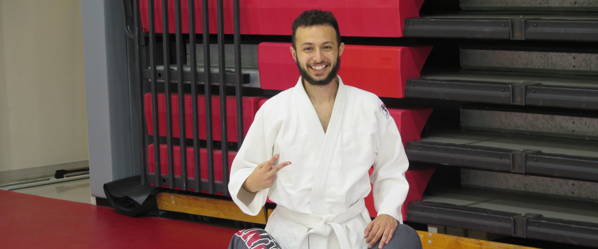
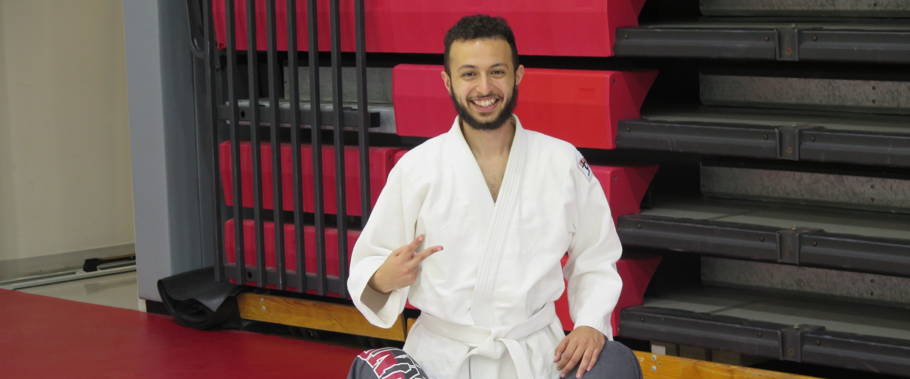
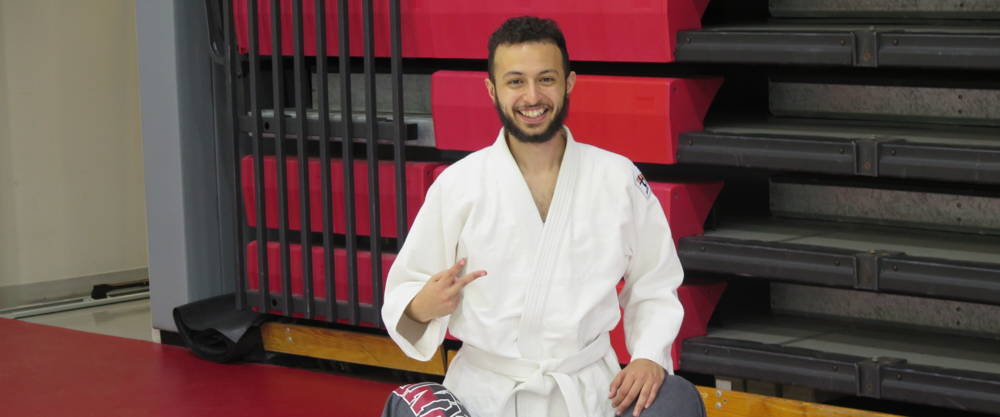
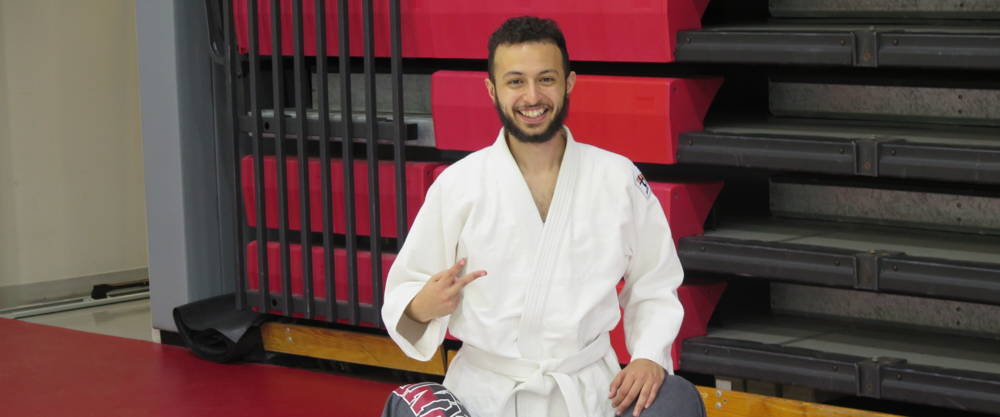

 

F.A.Q
Who is allowed to join?
We welcome anyone of any skill level! We are always excited to meet new people and to teach!
How can I get to the Friedman Wrestling Center?
There is free parking after 5pm, or you can take any TCat headed towards the veterinary school, walk, or bike!
Do I need anything to come?
NO! We ask you to sign a waiver when you show up to your first practice, but you do not need any special gear for your first few practices. Bring a friend too and have some fun!
First go to our contact page! Join our CampusGroups and email list-serv, and we will see you at our next practices! Our practices are Mondays, Wednesdays, and Fridays from 7:30 to 9pm at the Friedman Wrestling Center!